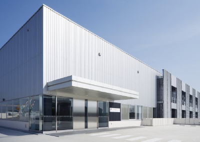
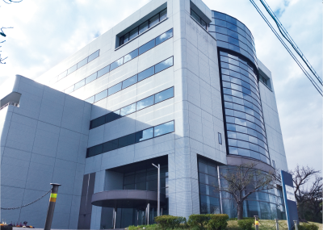
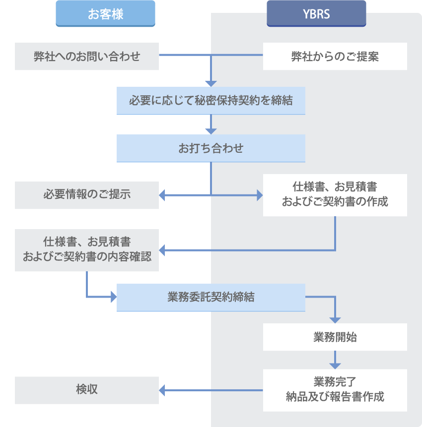

アクセス
本社（鶴見事業所）
〒230-0045 横浜市鶴見区末広町1-6 横浜バイオ産業センター

| バス | JR京浜東北線「鶴見駅」東口又は京急線「京急鶴見駅」からバス12分。 鶴見駅東口バスターミナル8番乗り場より、 臨港バス (鶴08系統) 「ふれーゆ」行き「理研・市大大学院前」下車。 |
|---|---|
| 電車 | JR鶴見線「鶴見小野駅」より徒歩15分。 |
| ふれーゆ行バス停からふれーゆ方面に70ｍ進んだ左手の黒い門が入口になります。 門を入ってすぐのエレベーターで2階へあがって頂き、左方向にあります建物が「横浜バイオ産業センター」になります。 2つ目の自動ドアの右側にある電話にて内線でお呼び出し下さい。 |
|
福浦事業所
〒236-0004 横浜市金沢区福浦2-12-1 癸巳化成H＆Bセンター

| 金沢シーサイドライン | 「福浦駅」より徒歩5分。 JRをご利用の場合は「新杉田駅」、 京急線ご利用の場合は「京急金沢八景駅」でのお乗り換えが便利です。 |
|---|---|
| 改札口を出たら右方向に進み、突き当り右の階段を下り、そのまま直進。 一つ目の信号を左折し、右手側の3ブロック目が「癸巳化成H&Bセンター」となります。 |
|
ご契約までの流れ

お問い合わせ
YBRSに対するご質問・ご相談がございましたらお気軽に
事業開発部 事業受託担当までお問い合わせください。
なお、弊社担当者が不在の場合、共同事業者である
癸巳化成株式会社の担当者が対応させていただく場合がございます。
お客様より頂いた内容はお客様へのご対応に限定して使用いたします。
メールによるお問い合わせ
MAIL: ybrs-info★yokohamabio.co.jp
お手数ですが、上記アドレスの"★"部分を@に変更してお送りください。
お電話によるお問い合わせ
TEL: 045-511-1028
受付時間：10:00-17:00 (土・日・祝日・夏季・年末年始の休業日を除く)
FAXによるお問い合わせ
FAX: 045-306-9594
受付時間：10:00-17:00 (土・日・祝日・夏季・年末年始の休業日を除く)
※FAX、メールによるお問い合わせのお客様は
所属・氏名、返信先電話/FAX番号又はメールアドレスをご記入下さい。
3営業日以内に返信が届かない場合はあらためてお電話でお問い合わせ頂けると幸いです。